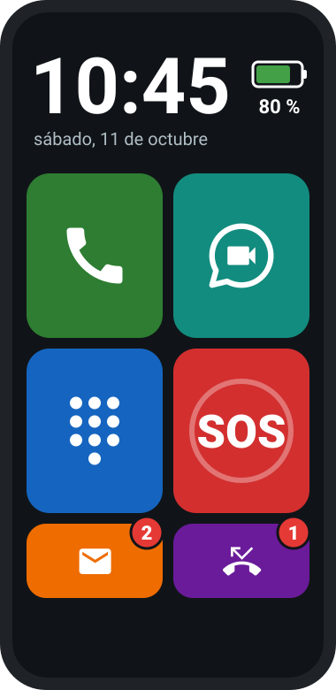

Un móvil que se usa sin saber leer.
Launcher Fácil convierte cualquier Android en un teléfono sencillo: fotos grandes para llamar, un botón SOS, el reloj y la batería en grande. Un familiar lo configura y la persona ya no puede perderse ni desconfigurarlo.
Sin anuncios, sin cuentas y sin enviar datos a ningún servidor.

Todo lo necesario. Nada más.
Cada función se reconoce por su color y su dibujo. No hay menús, ni textos, ni nada que se pueda tocar por error.
Llamar con una foto
Las personas de confianza aparecen con su foto. Tocar la foto es llamar.
Videollamadas de WhatsApp
Un toque en la foto y la videollamada empieza sola, sin pasar por los chats.
Botón de emergencia
Mantenerlo pulsado 2 segundos llama al familiar de confianza y le envía la ubicación por SMS.
Coger y colgar sin deslizar
Las llamadas entrantes muestran la foto en grande: verde para coger, rojo para colgar. Siempre vibran.
¿Dónde está? Solo si lo pides
Un familiar envía un SMS con UBICACION y recibe la posición en Google Maps. Sin seguimiento continuo.
Imposible desconfigurarlo
Modo quiosco: no se puede salir, ni borrar nada, ni abrir otras apps. Tras reiniciar, vuelve solo.
Mensajes y perdidas
Un número rojo avisa de mensajes nuevos y llamadas perdidas. Tocar una llamada perdida la devuelve.
Volumen que se entiende
Un panel enorme con una flecha y una escalera de barras. Nunca se queda mudo: como mínimo, vibra.
La batería dura más
Wi-Fi y Bluetooth apagados, apps innecesarias ocultas y actualizaciones de madrugada, sin molestar.
Así lo ve la persona
Elige una pantalla para verla en el teléfono.
María
Ilustración: las fotos reales de cada persona sustituyen a las siluetas.
Tú lo configuras. Una vez.
Un panel oculto (mantener pulsado el reloj 5 segundos) y protegido con PIN. La persona nunca lo verá.
- Elige quién aparece, con qué foto y en qué orden.
- Decide a quién llama el SOS y quién puede pedir la ubicación.
- Marca quién tiene WhatsApp para las videollamadas.
- Pausa el modo quiosco para instalar o cambiar algo y actívalo de nuevo, sin ordenador.
Listo en cuatro pasos
Funciona en cualquier móvil con Android 8.0 o superior. Para activar el modo quiosco hace falta un ordenador una sola vez.
Prepara el móvil
Restablécelo de fábrica y salta las cuentas en el asistente. Activa la depuración USB.
Instala la app
Conéctalo al ordenador y ejecuta adb install launcher-facil.apk.
Activa el quiosco
Un comando la convierte en administradora del móvil y lo bloquea en Launcher Fácil.
Configúralo
Reloj 5 segundos, crea el PIN y añade las fotos de su gente. WhatsApp, si lo usa.
Descarga Launcher Fácil
Gratis, sin anuncios y sin cuentas. Descarga el archivo APK e instálalo siguiendo la guía.
Dudas habituales
¿Para quién es Launcher Fácil?
Para personas que no saben leer, personas mayores o con discapacidad cognitiva, y en general cualquiera que se pierde con un móvil normal. Lo configura un familiar o cuidador.
¿Funciona en cualquier móvil Android?
En cualquiera con Android 8.0 o superior y tarjeta SIM. Se ha probado a fondo en un Samsung Galaxy A16. En otras marcas, algún menú del sistema puede llamarse distinto.
¿Se puede seguir la ubicación de la persona todo el tiempo?
No, a propósito. El teléfono solo busca su posición cuando un familiar autorizado la pide por SMS o cuando se pulsa SOS. No hay seguimiento continuo ni historial.
¿Envía mis datos a algún servidor?
No. Launcher Fácil no tiene servidor, ni cuentas, ni publicidad, ni analítica. La ubicación solo sale del móvil por SMS, directamente al teléfono del familiar.
¿El SOS llama al 112?
Llama al familiar de confianza, que es quien mejor puede ayudar y sabe dónde está. Android no permite que una app llame al 112 por sí sola; si no hay ningún contacto configurado, abre el marcador con el 112 ya escrito.
¿Hace falta WhatsApp?
No. Las llamadas, el SOS y la ubicación funcionan solo con la SIM. WhatsApp se usa únicamente para las videollamadas, si la persona las quiere.
¿Y si olvido el PIN del cuidador?
Por seguridad no se puede recuperar: habría que restablecer el móvil de fábrica y volver a instalar. Apúntalo en un sitio seguro.
¿Se puede quitar después?
Sí. Desde el panel del cuidador se desactiva el modo quiosco y la app se desinstala como cualquier otra.